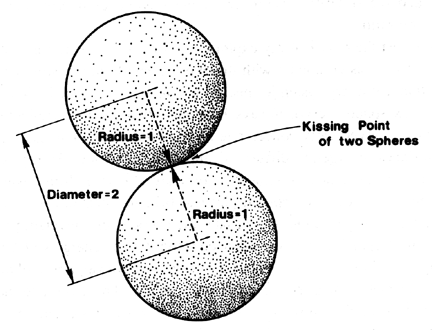

|  |
| Fig. 986.161 Diametric Unity: The vectors of the isotropic vector matrix interconnect the spheric centers of any two tangentially adjacent spheres. The radii of the two spheres meet at the kissing point and are each one-half of the system vector. Unity is plural and at minimum two. |